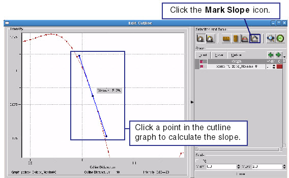

The slope of
an intensity graph provides useful information about the sharpness
of an image. This information is available in the Cutline tool.
Procedure
- In the Cutline tool, click
the Mark Slope button.
- Click a point on the cutline
graph. This instructs Calibre to calculate and display the slope
at the point selected.
Figure 1. Finding Slope in an
Intensity Graph